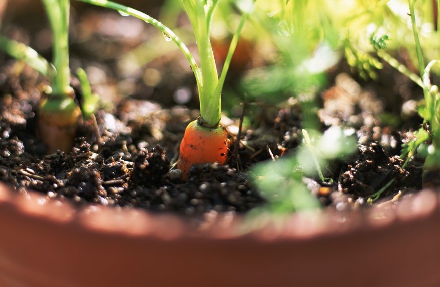

Carrot is a nutritious root vegetable known for its bright orange color and crunchy texture. It is commonly used in salads, soups, fried rice, juices, and healthy meals. Carrots are easy to grow in loose soil and are suitable for home gardens, containers, and small farming projects.
Needs 6–8 hours of direct sunlight daily for healthy root development.
Water regularly to keep soil moist but not overly wet. Avoid waterlogged soil.
Best growth at 16°C – 24°C. Cooler temperatures help improve root quality.
Use loose, sandy, well-draining soil free from rocks to allow straight root growth.
Can be harvested 2–3 months after planting depending on carrot variety and size.
Used in salads, soups, juices, fried rice, cakes, healthy snacks, and cooking dishes.
Cause: Overwatering or poor drainage.
Solution: Improve drainage and avoid excessive watering.
Cause: Rocky or compact soil.
Solution: Use loose sandy soil without stones.
Cause: Nutrient deficiency or poor watering.
Solution: Add compost and water properly.
Cause: Common garden pests.
Solution: Remove damaged leaves and use natural pest control.
Cause: Lack of sunlight or poor soil nutrients.
Solution: Move to sunnier location and improve soil fertility.